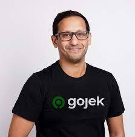

Di era teknologi ini, seorang technopreneur memulai bisnisnya hanya dengan ide brainstorming. Dia mengidentifikasi praktik saat ini dan menilai beberapa ide baru untuk melakukan sesuatu yang berbeda.
Seseorang yang berkecimpung dalam technopreneurship menciptakan produk atau solusi yang menggunakan solusi teknologi untuk mengubah cara melakukan sesuatu dengan cara yang ortodoks. Ini meningkatkan bagaimana kita telah melakukan sesuatu sebelumnya dan bagaimana itu harus dilakukan di masa mendatang.
Technopreneur merupakan sebutan untuk seseorang yang memanfaatkan perkembangan teknologi mutakhir untuk dioptimalkan sebagai basis dalam mengembangkan pengembangan usaha. Sederhananya, technopreneur adalah seseorang yang mengelola usaha menggunakan basis teknologi.
Untuk menjadi seorang Technopreneur dibutuhkan kompetensi yang terdiri dari knowledge, skill, dan attitude. Peran dan tanggung jawab technopreneur yaitu, melaksanakan riset dan pengembang ilmu pengetahuan dan teknologi, mengutamakan kemudahan dalam penggunaan teknologi, mengolah teknologi dengan mengedepankan efisiensi dan efektivitas sehingga dapat menghasilkan produk yang berkualitas, melakukan inovasi teknologi untuk mengubahnya menjadi lebih canggih, modern dan sesuai dengan tuntutan pasar
Tujuan Technoprenerurship
1. Menciptakan lapangan kerja
2. Sumber daya lokal
3. Kemajuan teknologi
4. Promosi Kewirausahaan
Contoh Technoprenerur
Catat agar tidak lupa
Achmad Zaky
Achmad Zaky, masuk jajaran orang terkaya di Indonesia seiring dengan saham Bukalapak yang diperdagangkan di bursa saham Bukalapak merupakan perusahaan teknologi unicorn pertama yang mencatatkan saham di Bursa Efek Indonesia (BEI). Achmad Zaky (lahir 24 Agustus 1986) adalah founder dan mantan CEO dari sebuah situs e-commerce bernama Bukalapak. Ia mendirikan situs tersebut sejak tahun 2010 bersama rekannya Fajrin Rasyid dan Nugroho Herucahyono. Zaky menempati posisi Chief Executive Officer (CEO) Bukalapak sejak berdiri hingga akhir tahun 2019.
Nadiem Makarim
Gojek didirikan oleh Nadiem Makarim, warga negara Indonesia lulusan Master of Business Administration dari Harvard Business School. Ide mendirikan Gojek muncul dari pengalaman pribadi Nadiem Makarim menggunakan transportasi ojek hampir setiap hari ke tempat kerjanya. Nadiem melihat ternyata sebagian besar waktu yang dihabiskan oleh pengemudi ojek hanyalah sekadar mangkal menunggu penumpang. Nadiem Makarim melihat adanya peluang untuk membuat sebuah layanan yang dapat menghubungkan penumpang dengan pengemudi ojek.